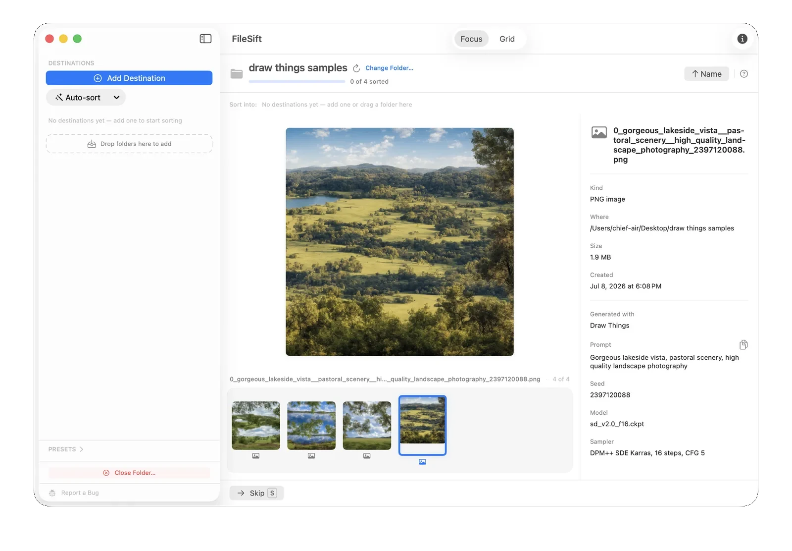

Keep the good ones. Delete the rest.
You generate hundreds of AI images — most are misses. FileSift shows each one big; one keypress keeps or trashes it, with the prompt and seed right there. Nothing leaves your Mac.
Requires macOS 14 or later · $9.99 on the Mac App Store

You make more than you can keep.
Midjourney, Stable Diffusion, ComfyUI, Flux, Draw Things — an afternoon of prompting can fill a folder with hundreds of images, and most aren't the ones you'll keep. FileSift is the fast way to go through the batch and pull out the good ones.
How it works
Open your output folder
Point FileSift at wherever your generations land.
Go through them fast
Each image fills the screen. Press a number key to send it to Keep, Trash, or a project folder — the next one's already up.
Change your mind, safely
Deleted the wrong one? ⌘Z walks it right back. "Put Back All Moves" reverses the whole session.
See how each one was made
For images from Automatic1111, Forge, ComfyUI (including Flux), and Draw Things, FileSift reads the generation data baked into the file and shows it beside the image — the prompt, negative prompt, seed, model, and sampler.
Compare two takes, copy a prompt to rerun it, or keep the one with the settings you liked — without opening anything else.

Hundreds at once? Deal in handfuls.
Grid shows the whole batch at once, every image as a thumbnail. Draw a box around the rejects, sweep with the arrow keys, or shift-click a range — then one keystroke sends the lot to the trash. All the selection moves your Mac hands already know.
Every move is reversible
Each image you sort stays on screen, dimmed, with a marker showing where it went. ⌘Z brings the last one back; Put Back All Moves reverses the whole session.

Your unreleased work stays yours
No account, no uploads, no tracking. FileSift reads and sorts everything locally — your images and prompts never leave your Mac. Read the privacy policy
Questions
Which tools' generation details can it read?
Images from Automatic1111, Forge, ComfyUI (including Flux), and Draw Things carry their prompt and settings inside the file, and FileSift shows them beside the image. Midjourney and ChatGPT don't embed a readable prompt, so those images sort just fine but without the generation details.
Does it upload my images or prompts anywhere?
No. Everything is read and sorted on your Mac. Nothing is sent, tracked, or stored off your device — your prompts and unreleased work stay yours.
What file types does it handle?
PNG and JPEG generations with rich previews, plus video (MP4/MOV) and any other file that happens to be in the folder.
Can I sort into keep, maybe, and trash folders?
Yes. Set up your destination folders once (you can save them as a preset), then a single number key sends each image where it goes.
What do I need to run it?
A Mac running macOS 14 (Sonoma) or later.
Turn the pile into just the ones you want.
Go through your latest batch tonight — keep the good ones, bin the rest.

macOS 14 or later · One-time purchase · $9.99 on the Mac App Store